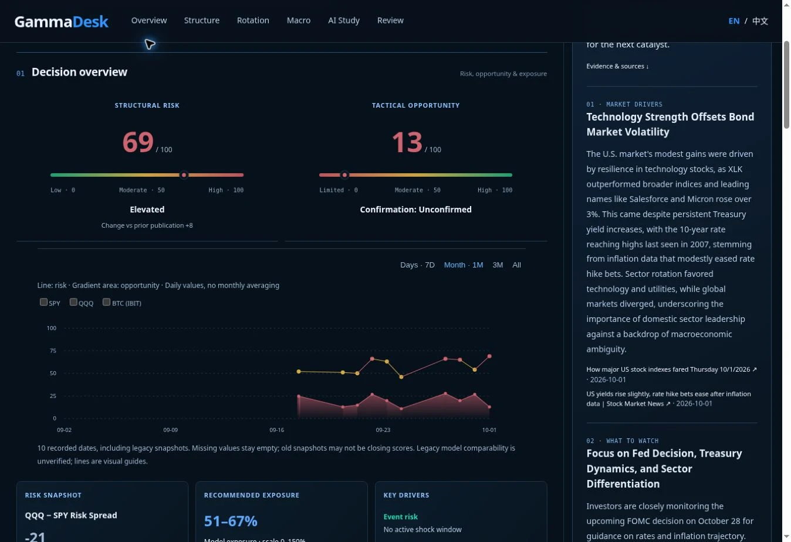
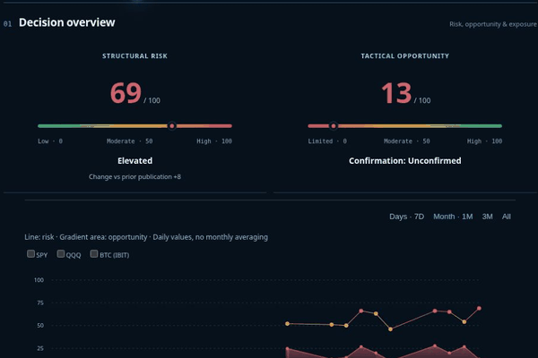
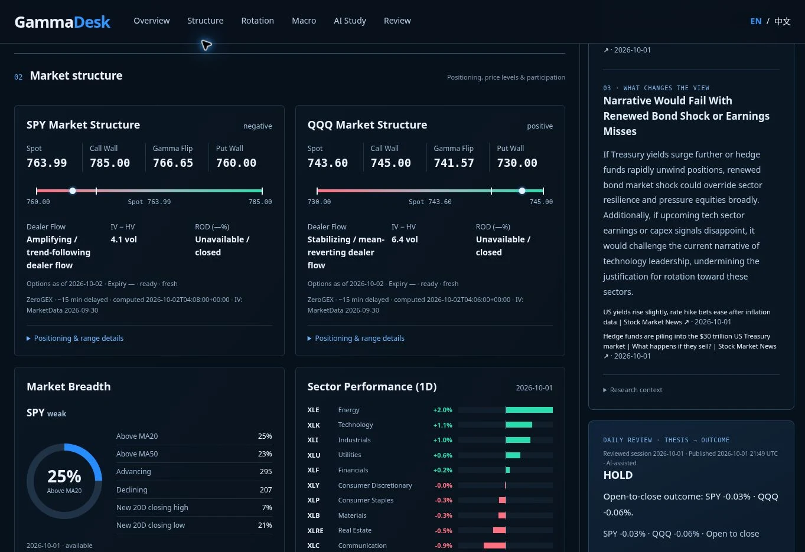
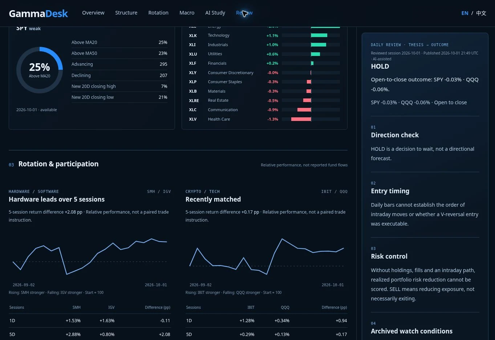

What could make the environment fragile?
Macro drivers, participation, volatility, dealer structure, and event context frame the risk assessment.
From market evidence to a daily view.
Then back to the evidence.
A bilingual research workspace connecting macro conditions, options structure, market participation, and daily review. I developed the research framework, designed the experience, and built and iterated the application with AI-assisted development tools.
Research framework · Product strategy · UX/UI · Development
Next.js · Financial data APIs · OpenAI · GitHub · Vercel

Three years of running my own research left me with the same routine every morning: rates in one tab, options levels in another, breadth somewhere else, and a view formed somewhere in between. The challenge was never a lack of market information—it was keeping observations, interpretation, and later outcomes connected.
Rates, dollar, energy, volatility, event risk, and dated market inputs.
How much structural risk is present? Is there a confirmed tactical opportunity?
Options levels, breadth, sector rotation, sources, and missing inputs.
Preserve the dated assessment and the conditions that would change it.
Revisit the thesis against the subsequent session, within the limits of available data.
A single bullish or bearish score hides too much. The overview gives structural risk and tactical opportunity their own measures, then places them on a shared history chart. A favorable setup can still exist in a difficult environment; neither measure substitutes for the other.
Macro drivers, participation, volatility, dealer structure, and event context frame the risk assessment.
The opportunity measure sits beside its confirmation state, keeping a possible setup distinct from an established one.

The overview leads into SPY and QQQ structure, price levels, breadth, and relative sector performance. Source dates and input coverage stay visible. Alongside these quantitative views, AI Study organizes cited research into market drivers, what to watch, and what could invalidate the narrative.

Freshness, coverage, and unavailable inputs are part of the interface. A missing value should not quietly become a reassuring zero.
Structured calculations produce the measures. AI-assisted research adds context and questions to investigate, with sources available for inspection.
Overview → structure → rotation → macro → research → review. Section navigation supports both a quick scan and a deeper daily routine.
Daily Review brings the original thesis back into view alongside the reviewed session’s outcome. It separates direction, entry timing, risk control, and archived watch conditions—so a good-looking chart does not become a rewritten explanation after the fact.

The review distinguishes a decision to wait from a directional forecast. Without intraday paths, holdings, or fills, it does not claim executable entry timing or realized portfolio results.
This was an ongoing cycle of defining rules, integrating data, designing the reading order, inspecting edge cases, and refining the live product. The work connects domain research with interface decisions and the practical constraints of API availability, historical records, and deployment.
Translate a macro-first research process into explicit inputs, separate measures, and conditions that can be reviewed later.
Lead with the assessment, expose its evidence, and keep research and review within reach. Support the same workflow in English and Chinese.
Integrate providers, handle missing or dated inputs, retain daily records, and ship through GitHub and Vercel using AI-assisted development.
Ongoing independent research product. Screenshots document the interface, not an investment recommendation or a claim of validated trading performance.